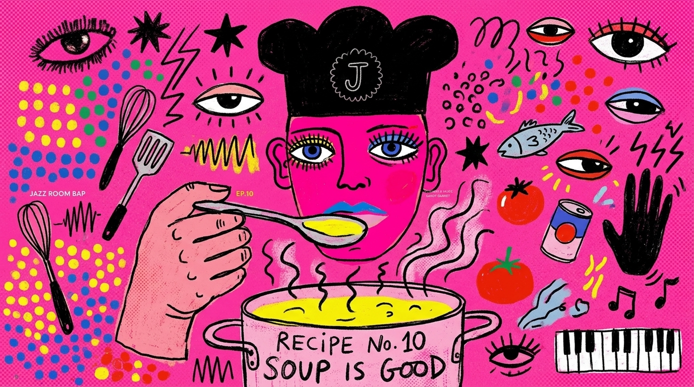
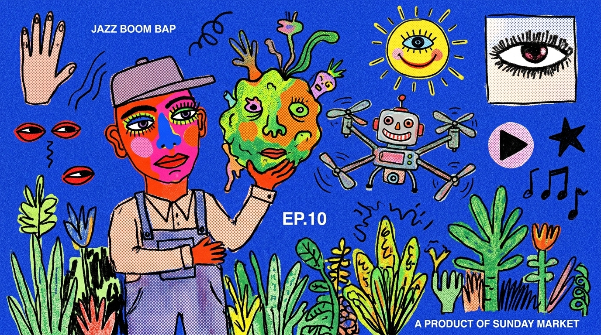
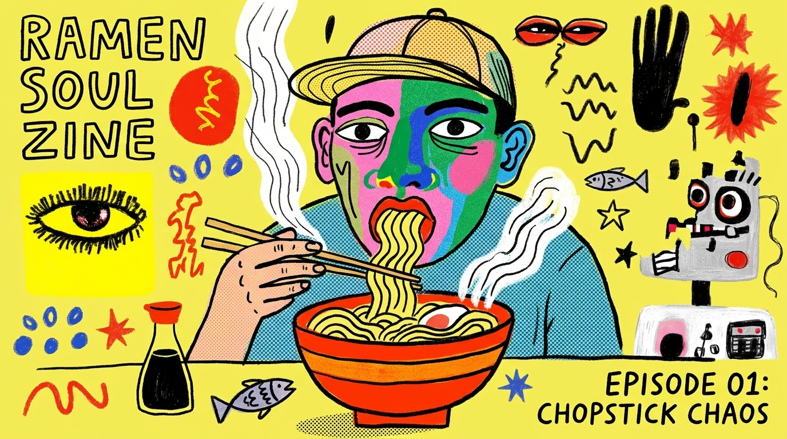

把「換一套插圖風格」變成一件你能隨時做的事。重點不是某個風格好不好，是讓風格變成可替換的單元。
/publish-issue 永遠不變，它只是去讀「現役 profile」。換風格 = 換它讀哪個 profile。這跟編輯那套是同一個道理：
| 可替換的資料模組 | 穩定的流程 |
|---|---|
| 編輯 ＝ soul／voices／memory | /write-issue |
| 風格 ＝ style.md ＋ 錨點圖 | /publish-issue |
docs/illustration/styles/<風格名>/，就是一個自帶一切的可替換單元。來源不限——插畫、照片、截圖、mood board 都能抽。/style-extract，得到 profile skill~/style-lab/。/publish-issue）指過去、更新人看的 illustration-guide。以後那個專案生圖自動走新風格。/style-extract 產一個驗證過的 profile（跨專案、可重用）→ ② 哪個專案要用，就把它導入、換現役。換風格 = 重跑這兩步。這是把一組大膽 pop 插畫抽成的 profile 規格——示範「一系列圖 → 可重用風格」長什麼樣：
# Style Profile · Bold Pop / Riso（範例）
配色：單一高彩度平塗底（熱粉／電光藍／鎘紅／檸檬黃／teal）＋黑，一圖一主色
線條：粗黑、手繪、帶拙味的墨線
質感：riso／絹印顆粒、蠟筆填色、半調點點、看得見筆觸
造形：naive 孩童感，臉誇張，膚色用非自然 pop 色
構圖：大膽中心人物 ‧或‧ 漂浮元素拼貼；平塗單色地、無景深
情緒：戲謔、街頭、音樂海報／zine
錨點：（該風格的 2–4 張代表圖）
禁忌：寫實膚色／3D／漸層／照片感／來源殘留字幕
提示詞片段：bold naive folk-pop, riso/screenprint, thick black ink,
crayon grain + halftone, flat single saturated background,
stylized pop-colour faces (no realistic skin), 16:9



↑ 用這個 profile 實跑出來的 3 張（不同主題：廚房／田裡／拉麵）——同一套風格、跨內容都重現。經 /style-extract 的驗證迴圈打分確認（這套大膽風 The Pass 不採用，純示範「換風格」流程跑得通）。
# Style Profile · {風格名}
一句話：{一句抓住這個風格的調}
配色：{主色 + hex + 用法；平塗還漸層；有沒有特殊質感}
線條：{粗細／手感／要與不要}
質感：{印刷感？顆粒？網點？}
人物／造形：{怎麼畫人、臉、比例；可見與不可見}
構圖：{主角是誰、留白多少、比例 16:9}
品牌固定元素：{出菜框＋桌鈴 要不要保留／怎麼融入這風格}
禁忌：{這風格絕不要出現的東西}
錨點圖：{2–4 張代表圖路徑}
提示詞片段：{每次生圖貼的那段}
Negative：{要避免的清單}
docs/illustration/styles/risograph/style.md 就是現役風格的完整實例，可直接照抄結構。docs/illustration/styles/risograph/style.md。要換風格，照上面四步跑一次就好。